In this project, I with my teammate, Linh Chu, designed a 16-bit Configurable Logic Block (CLB), a circuit that can model any 4-input combinational logic function. It is an essential building block that provides flexibility for Field Programmable Gate Arrays (FPGAs). The circuit was developed in 45nm Salicide 1.0V/1.8V 1P 11M technology supported in Cadence.
The CLB is composed of four key components:
- 16:1 Lookup Table (LUT)
- SRAM Array
- Serial In Parallel Out (SIPO) Register
- Non-overlapping Clock Generator
All of which are integrated into the final Configurable Logic Block.
16:1 Lookup Table (LUT)
The LUT accepts 4 binary inputs and stores 16 output values—one for each of the 24 possible input combinations. The inputs act as selectors that choose the corresponding pre-stored output. The beauty of the LUT is its configurability: by reprogramming the pre-stored array, the LUT can implement any 4-input logic function.
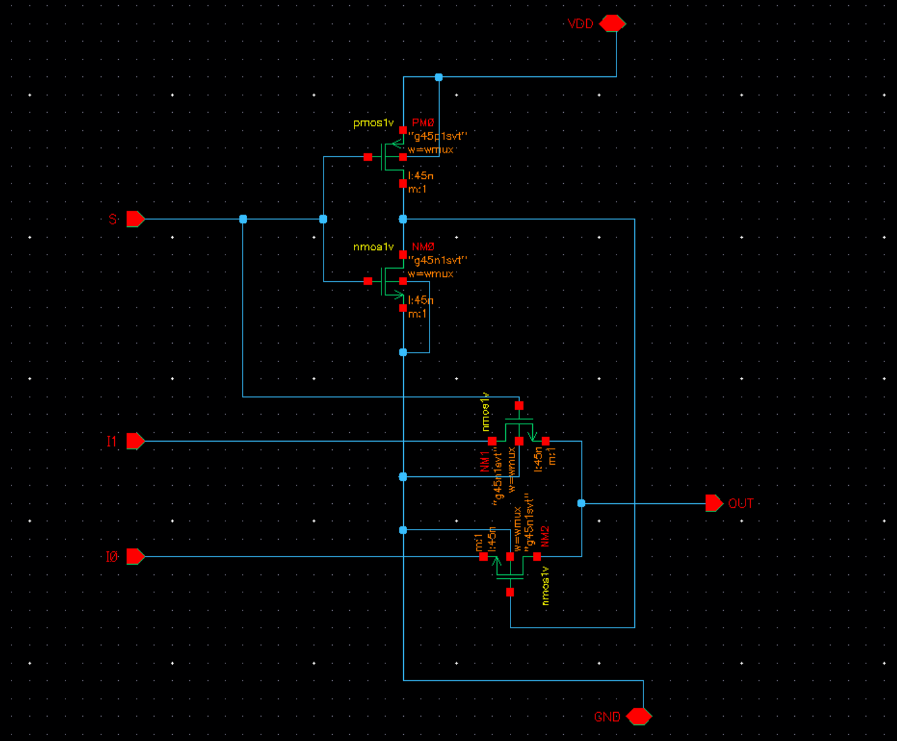
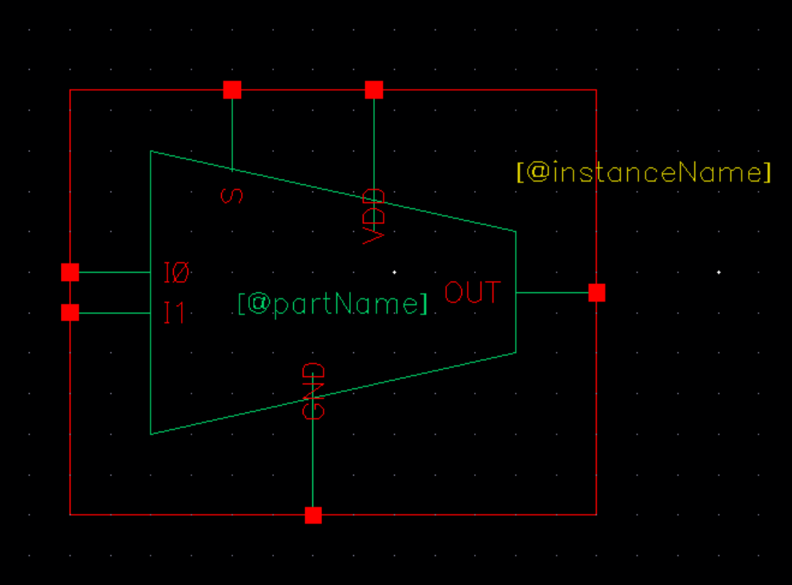
We start with the design of a 2:1 MUX (similar to LUT, it selects one of two outputs based on a select line). A LUT can be constructed by connecting 15 MUXes in a tree structure, as shown below. Two CMOS logic inverters at the output serve as a buffer, restoring the voltage after pass-transistor logic degradation in the MUXes
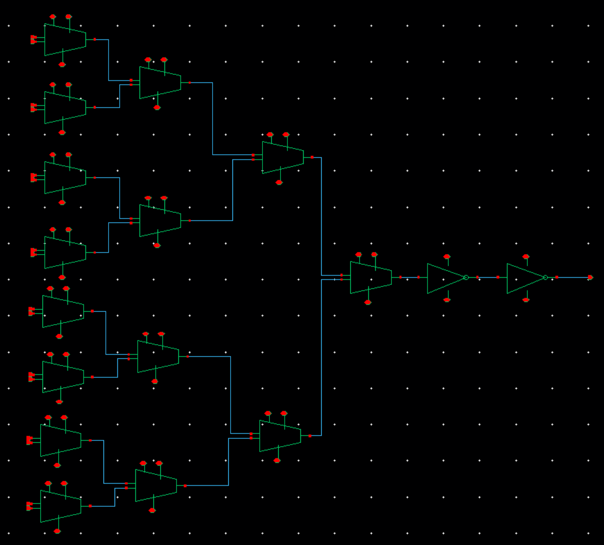
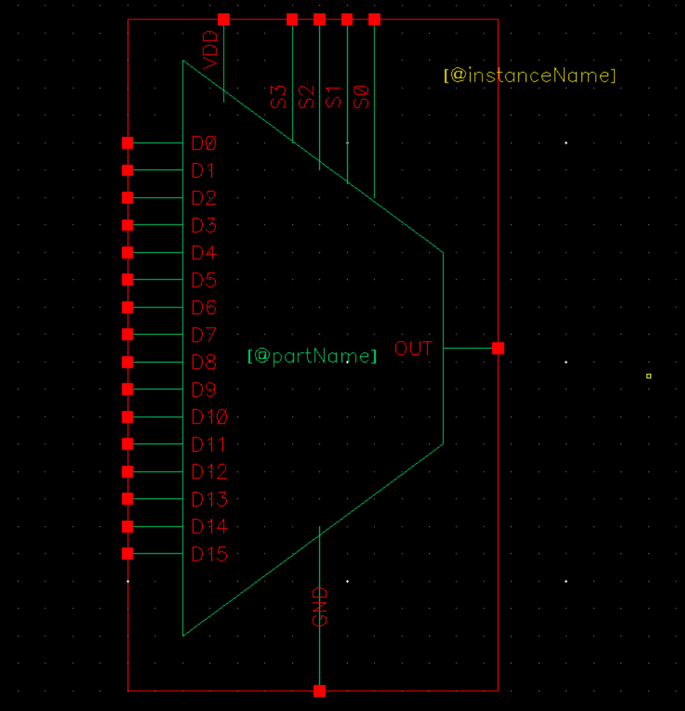
SRAM Array
The LUT's 16 output values are stored in an SRAM array. Each cell is a standard 6T design, controlled via Bit lines (BL / BL) and a Word line (WL) through precharge and discharge. See this tutorial for a detailed walkthrough of SRAM operation.
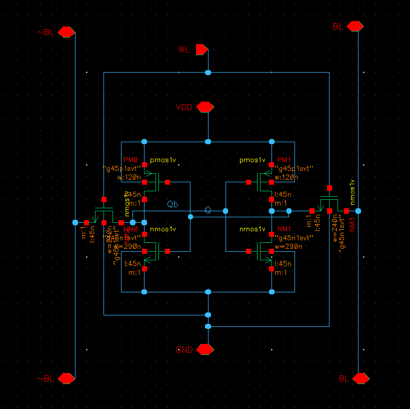
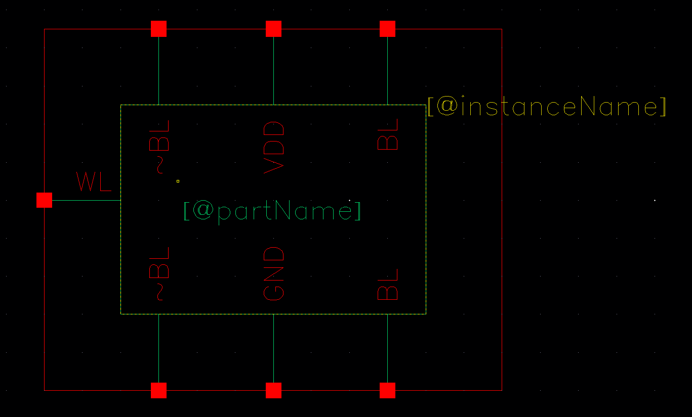
To make the cell easier to integrate, we wrapped it with a small peripheral interface exposing five I/O signals:
- PC: Precharge control
- W_EN: Write enable
- WL: Word line
- DATA: Write input
- OUT: Read output
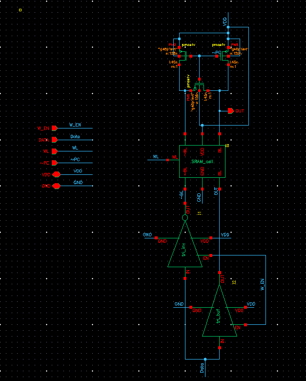
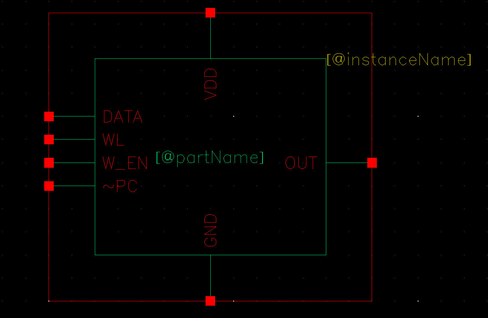
Sixteen identical cells are tiled into the final 16-bit array:
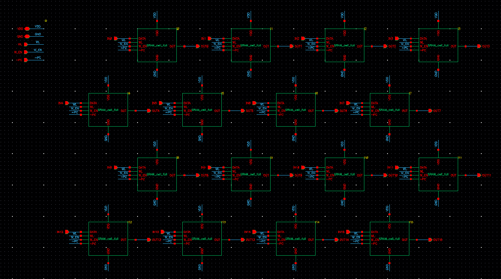
Serial In Parallel Out (SIPO) Register
Loading 16 bits into the SRAM in parallel would require 16 dedicated input pins. However, for simplicity and minimal layout area, we instead use a SIPO shift register to serialize the data: it accepts one bit per clock cycle and outputs all 16 bits simultaneously once shifting is complete.
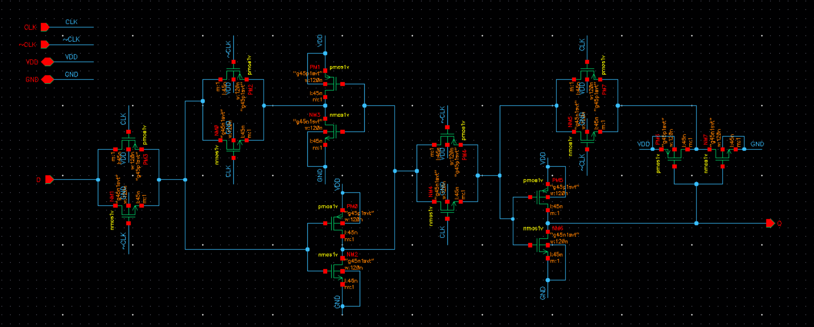
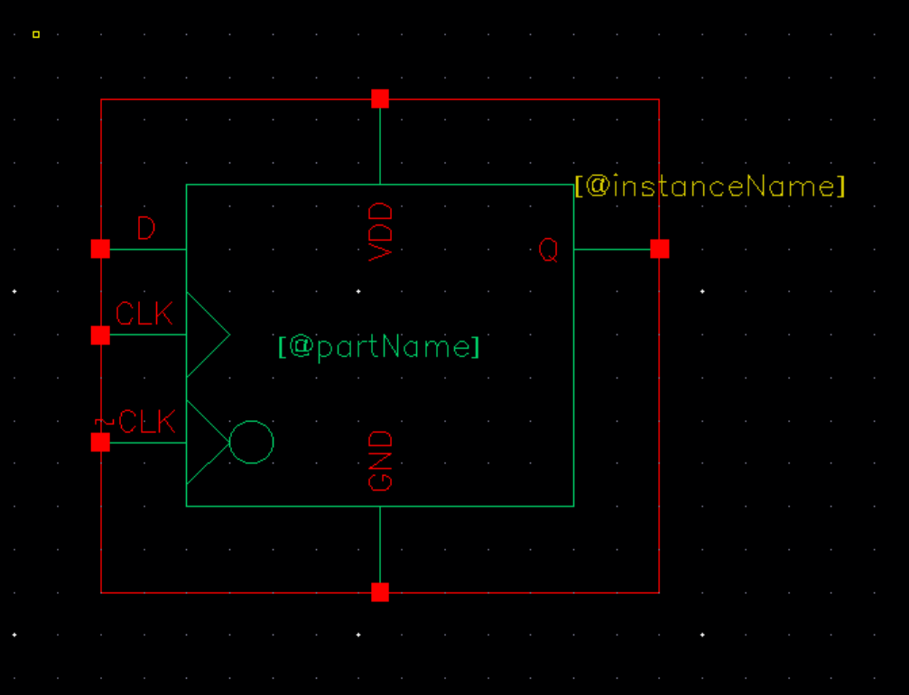
The SIPO is built by cascading 16 D flip-flops. Each clock edge shifts the data one stage forward; the full word is available after 16 cycles
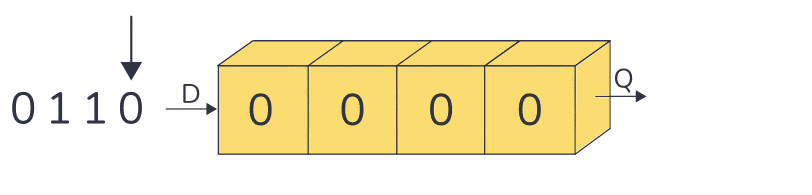
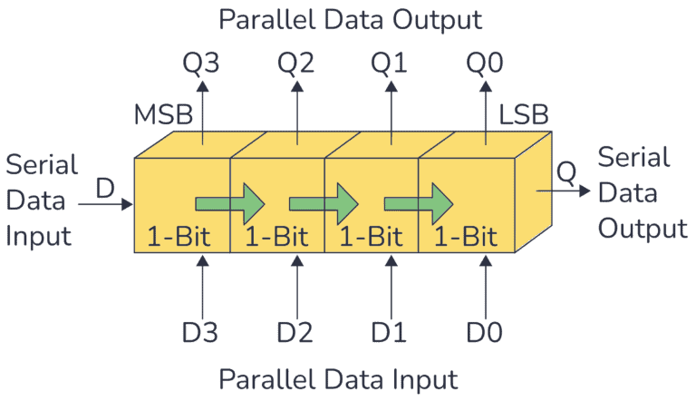
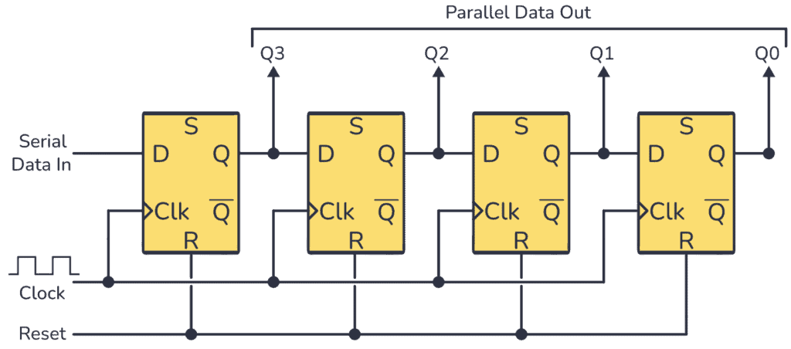
An example of 4-bit SIPO register [source]
Non-overlapping Clock Generator
The SIPO requires both CLK and CLK (see the D flip-flop schematic), so we design a non-overlapping clock generator to produce two complementary signals.
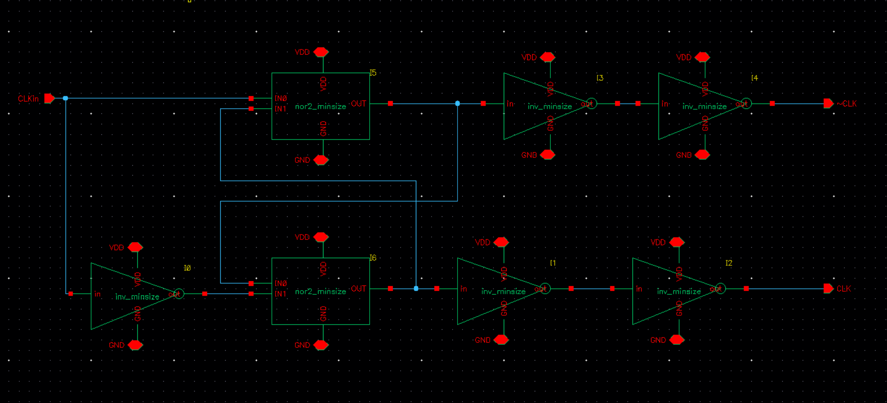
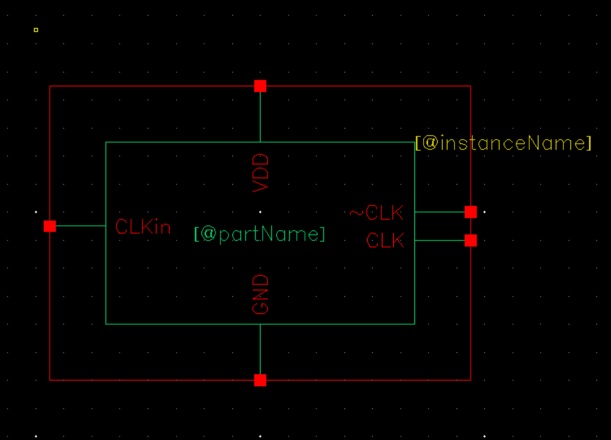
Configurable Logic Block (CLB)
With all four modules complete, they are wired together into the full CLB: the SIPO feeds serial configuration data into the SRAM, the SRAM drives the LUT's data inputs, and the non-overlapping clock coordinates timing across the entire pipeline.
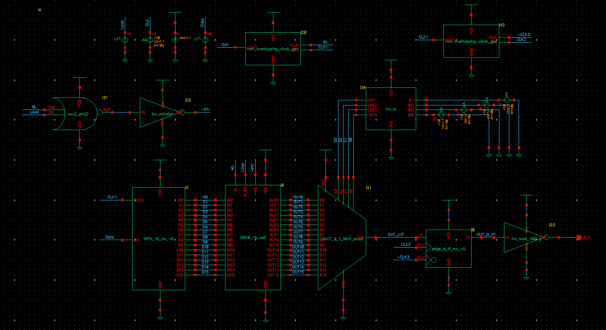
Performance Metrics
Post-layout benchmarking on the full design yielded the following results:
| Metric | Value |
|---|---|
| Max operating frequency | 1 GHz |
| Loading energy | 3.212 × 10⁻³ nJ |
| Active energy | 1.895 × 10⁻³ nJ |
Loading energy: energy to shift all 16 configuration bits into the SRAM.
Active energy: energy to cycle through all 16 input combinations (i.e., from 0x0 to 0xF) at max frequency.
That covers the full design flow for our 16-bit CLB. Details on transistor sizing, schematic verification, timing-hazard resolution, and circuit-level optimization are available upon request — feel free to reach out 😀